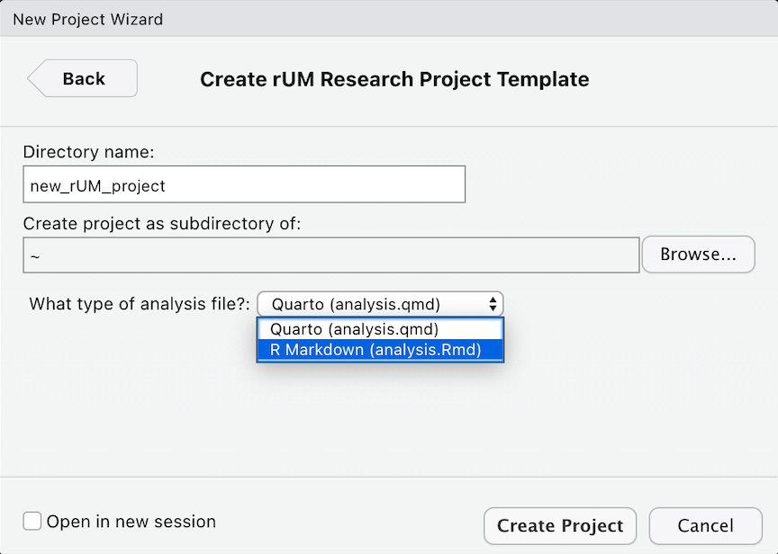
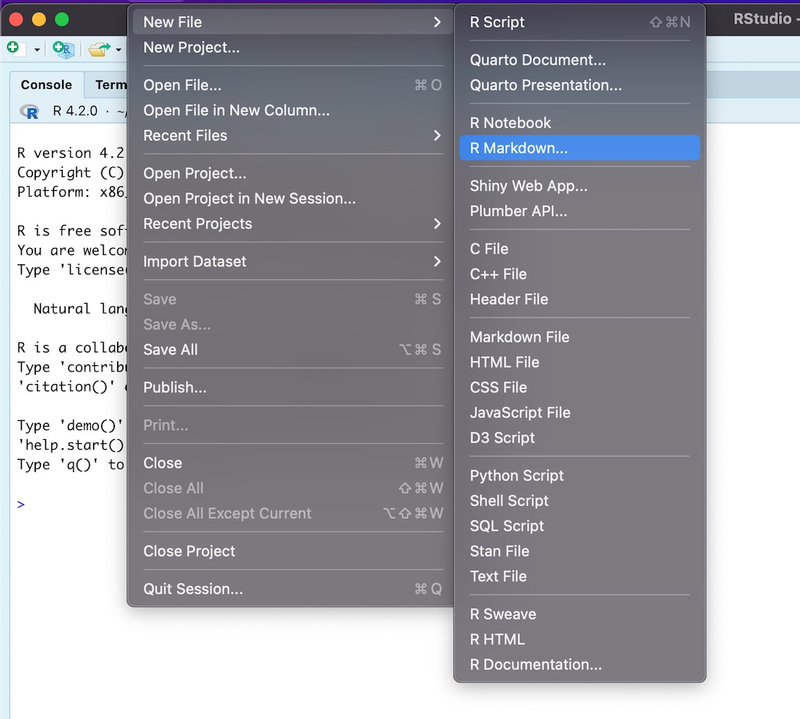
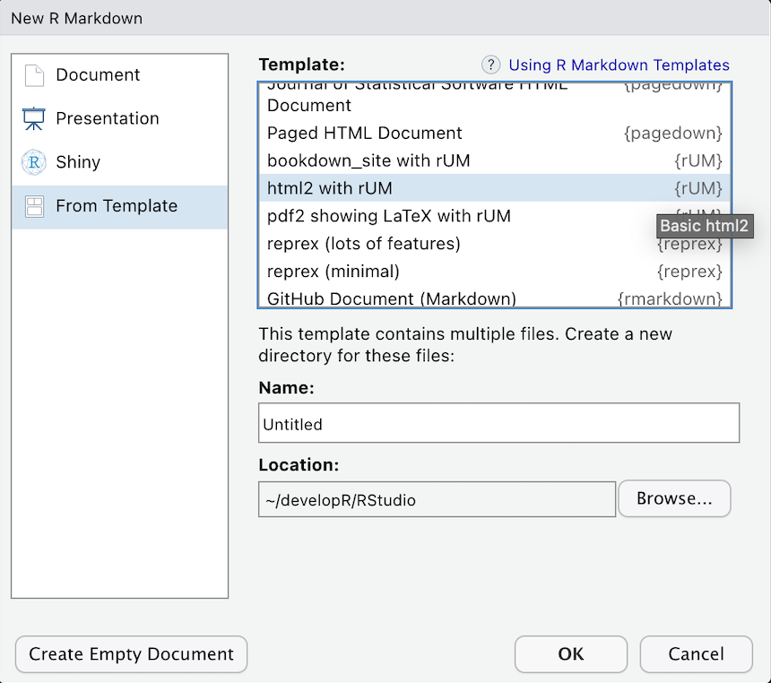

3. Create a Research Project with R Markdown and rUM
Source:vignettes/OO3_make_research_project_markdown.Rmd
OO3_make_research_project_markdown.RmdIntroduction
This is a collection of document templates, available through R, from your friends at the University of Miami (UM).
The rUM package will help you create research
manuscripts by removing the configuration hassles commonly encountered
when learning to write papers using R. rUM will initialize
a new RStudio project and a Markdown file that includes the outline for
a research paper. The Markdown file comes preconfigured with a YAML
header (don’t worry if you don’t know what that means yet) with code
chunks to load the tidyverse and conflicted
packages. Manuscript sections have been created for Introduction,
Methods, Results, Conclusion, and References. The project also includes
a .gitignore file which is designed to help protect against
accidentally leaking data when using git with websites like www.github.com.
rUM’s documentation can be found here:
How do I get RMarkdown and rUM? (Add a
“quart o’ rUM”!)
Modern version RStudio (v2022.07 or later) ships with R Markdown integrated into the RStudio IDE.
-
Add
rUMto your computer by:- using RStudio: click on the Packages tab in the bottom right windowpane, click the Install button, type rUM, and click Install.
- downloading rUM from CRAN and installing it by running this code in R console:
install.packages("rUM")- downloading the latest version of rUM from GitHub by running commands into the R console:
if (!requireNamespace("remotes")) install.packages("remotes") remotes::install_github("RaymondBalise/rUM") Use
rUMby running this in the console of RStudio:
Ordering rUM from the Menu
To create a research project that uses rUM, follow these
steps. This will initialize a new RStudio project that has an analysis.Rmd R Markdown
file using the tidyverse and conflicted
packages and some other useful files which are described below.
Using the RStudio menus, choose: File > New Project > New Directory
-
Scroll down and then select
rUMResearch Project Template rUM Research Project Template
rUM Research Project Template -
Specify the location of where your research project will be saved
Choose location to save your rUM project in RStudio
Add rUM into an existing folder/directory that does not
have an RStudio project.
What if you have already created a folder containing the important
files for your project? Create a new project in your existing folder!
This will now be your project directory (complete with a
.Rproj file).
Navigate to File > New Project > Existing Directory
-
Specify the location of where your research project will be saved
 Existing project working directory window in RStudio
Existing project working directory window in RStudio Run the following script in your console:
# Change the text inside the quotes on the next line to indicate the path to your folder/directory.
PATH <- "~/Documents/blah"
make_project(PATH, type = "R Markdown (analysis.Rmd)")After your rUM has been served
A new project directory has been created and it will be populated with these files:
- An aggressive
.gitignoreto help prevent the unintended sharing of sensitive study information or protected health information (PHI). -
analysis.Rmdis a Markdown template for writing your research project. It has a preconfigured YAML header; Introduction, Methods, Results, Conclusion, and Reference sections; and a code chunk to construct your bibliography usingknitr::write_bib(). - An empty folder named
data. This folder is listed within the.gitignore. That means that git should not track these files. This should help prevent data leakage but be sure to talk to a data security expert before sharing any biomedical projects on websites like GitHub. - A
.Rprojfile with the same name as your project folder. - Two text files,
packages.bibandreferences.bib, which are used to hold details for your paper’s bibliography. Refer to the Methods and References sections, respectively, within theanalysis.Rmdfile for initial examples of how to add/use references. -
the-new-england-journal-of-medicine.cslis the citation style language (CSL) based on the New England Journal of Medicine requirements.
Newly created files:
analysis.Rmd:
rUM infused Markdown headers
-
Navigate to File > New File > R Markdown
Navigating the RStudio console to access R Markdown rUM headers -
Select From Template
RStudio menu window displaying to choose “html2 with rUM” to use the R Markdown headers Choose a template:
- html2 with rUM
- html2 Details with rUM
- pdf2 showing LaTeX with rUM
- bookdown_site with rUM
This will create a new subdirectory in your current working directory
with the same name as the name of the .Rmd file you
specified. Within this directory, you will find the
analysis.Rmd R Markdown file. For example, if you created
an R Markdown file called wrangle_cytometry_data.Rmd with
the steps above, then your current directory will now have a
subdirectory called wrangle_cytometry_data/ which will
contain the file wrangle_cytometry_data.Rmd and any
subsequent files from the knitting process (such as .PDF,
.html, or .docx files created by knitting the
R Markdown document).
What are the headers
pdf2 showing LaTeX with rUM
PDF report where table and figures don’t float to other pages. Many thanks to https://stackoverflow.com/questions/16626462/figure-position-in-markdown-when-converting-to-pdf-with-knitr-and-pandoc.
Session
If you are new to R, ignore this.
sessionInfo()
#> R version 4.4.3 (2025-02-28 ucrt)
#> Platform: x86_64-w64-mingw32/x64
#> Running under: Windows 10 x64 (build 19045)
#>
#> Matrix products: default
#>
#>
#> locale:
#> [1] LC_COLLATE=English_United States.utf8
#> [2] LC_CTYPE=English_United States.utf8
#> [3] LC_MONETARY=English_United States.utf8
#> [4] LC_NUMERIC=C
#> [5] LC_TIME=English_United States.utf8
#>
#> time zone: America/Chicago
#> tzcode source: internal
#>
#> attached base packages:
#> [1] stats graphics grDevices utils datasets methods base
#>
#> loaded via a namespace (and not attached):
#> [1] digest_0.6.37 desc_1.4.3 R6_2.6.1 fastmap_1.2.0
#> [5] xfun_0.51 cachem_1.1.0 knitr_1.50 htmltools_0.5.8.1
#> [9] rmarkdown_2.29 lifecycle_1.0.4 cli_3.6.4 sass_0.4.9
#> [13] pkgdown_2.1.1 textshaping_1.0.0 jquerylib_0.1.4 systemfonts_1.2.1
#> [17] compiler_4.4.3 tools_4.4.3 ragg_1.3.3 evaluate_1.0.3
#> [21] bslib_0.9.0 yaml_2.3.10 jsonlite_1.9.1 rlang_1.1.5
#> [25] fs_1.6.5 htmlwidgets_1.6.4